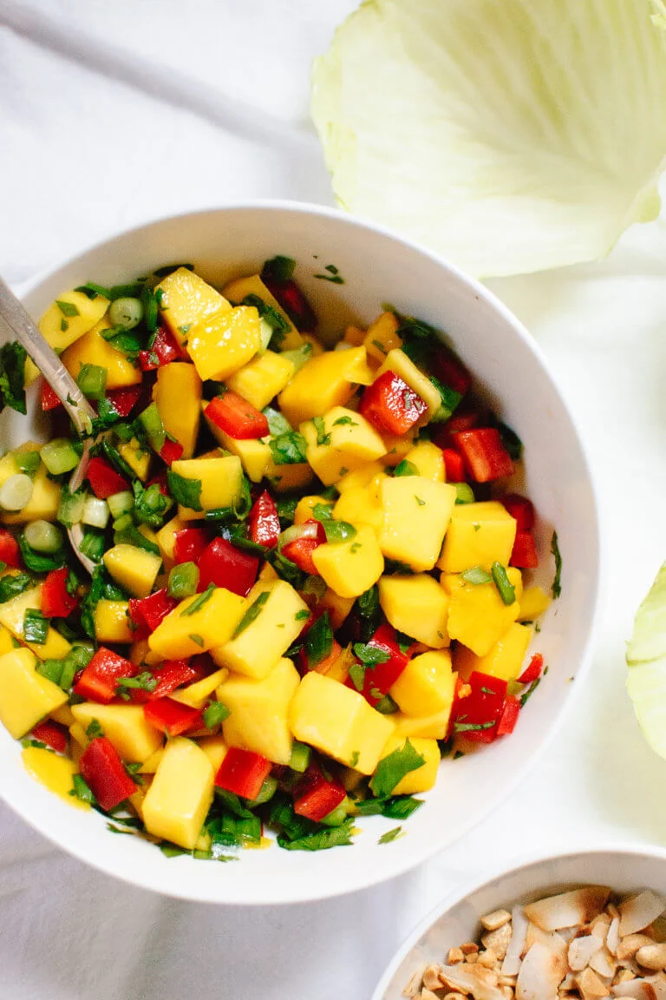
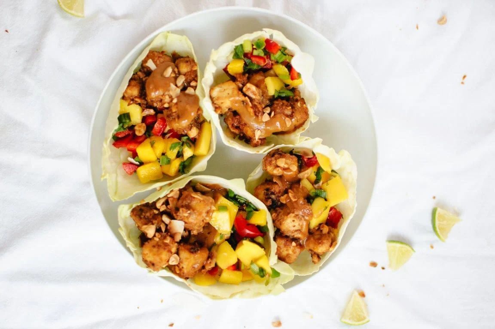

Thai Mango Cabbage Wraps

Ingredients:
- 1 (15 ounce) block of organic extra-firm tofu
- 1 tablespoon olive oil
- 1 tablespoon reduced-sodium tamari or soy sauce
- 2 teaspoons arrowroot starch or cornstarch
- ⅓ cup creamy peanut butter
- 2 teaspoons toasted sesame oil
- 2 garlic cloves, pressed or minced
- 2 ripe mangos, diced
- 1 medium red bell pepper, chopped
- ½ bunch (about 4) green onions, chopped
- ⅓ cup packed fresh cilantro leaves, chopped
- 1 jalapeño, minced
Instructions:
- To prepare the tofu: Preheat oven to 400 degrees Fahrenheit and
line a rimmed baking sheet with parchment paper. Drain the tofu
and use your palms to gently squeeze out some of the water. Slice
the tofu into thirds so you have three ½-inch slabs. Transfer the
tofu to a plate lined with a lint-free tea towel or paper towels.
Fold the towel over one tofu slab, then place the other slab on top,
then repeat with the last slab. Top with more towel and place
something heavy on top (like a cast iron skillet) to help press
the water out of the tofu.
- While the tofu drains, make the peanut sauce: Simply whisk
together all of the sauce ingredients until well blended. If the
flavor seems too bold or the sauce is too thick, thin it with a
tablespoon or two of water. Set aside.
- To bake the tofu: Transfer the drained tofu to a cutting board.
Slice each slab into four columns and four rows. Whisk together 1
tablespoon olive oil and tamari, then drizzle it over the tofu and
toss to coat. Sprinkle 1 teaspoon arrowroot starch over the tofu,
then toss the tofu until the starch is evenly incorporated. Repeat
with 1 more teaspoon arrowroot starch. Arrange the tofu in an even
layer on the baking sheet. Bake for 30 to 35 minutes, tossing
halfway, until the tofu is crisp and deeply golden.
- To make the mango salsa: Combine ingredients in a small serving
bowl and toss. Taste, and add additional salt and/or a little
splash of white wine vinegar if necessary. Set aside.
- To prepare the cabbage/lettuce: Slice off the thick stem and
bottom ¼th of the head of cabbage/lettuce. Gently pull off one
leaf at a time. Repeat until you have 6 to 8 cabbage leaves.
- If you want to go the extra mile with the tofu: Once the tofu has
finished baking, toast the coconut flakes and chopped peanuts in a
medium skillet over medium heat, stirring frequently, until the
coconut is golden on the edges. Add the tofu to the pan. Pour in
⅔rds of the peanut sauce and toss to coat. Cook, stirring
frequently, until the tofu has absorbed the sauce and has turned
golden on the edges. Transfer to a plate to cool.
